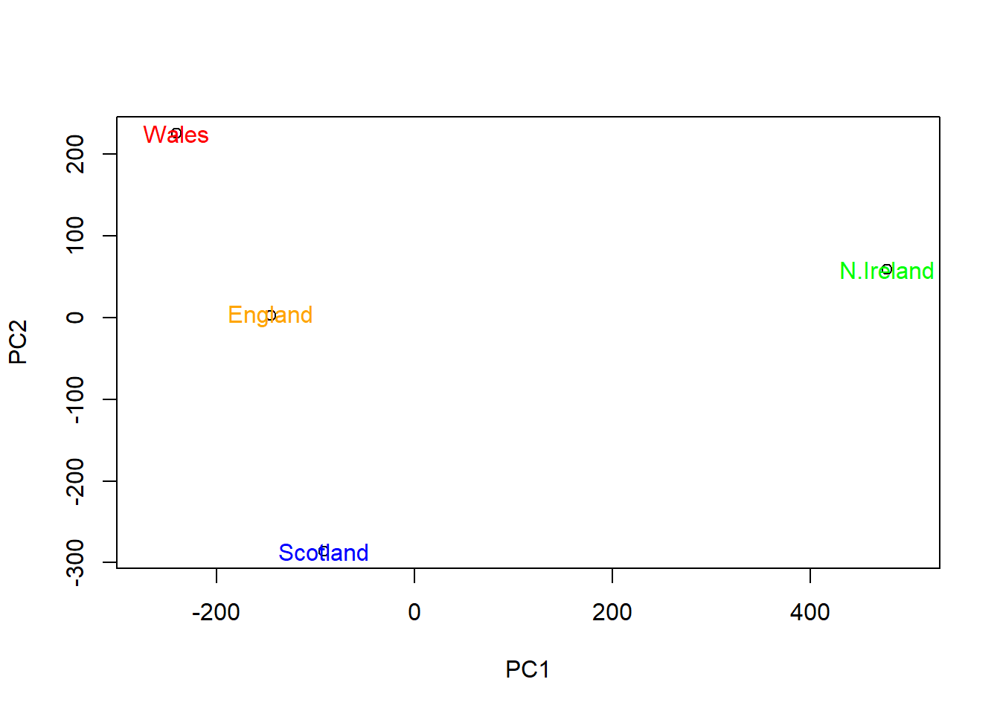
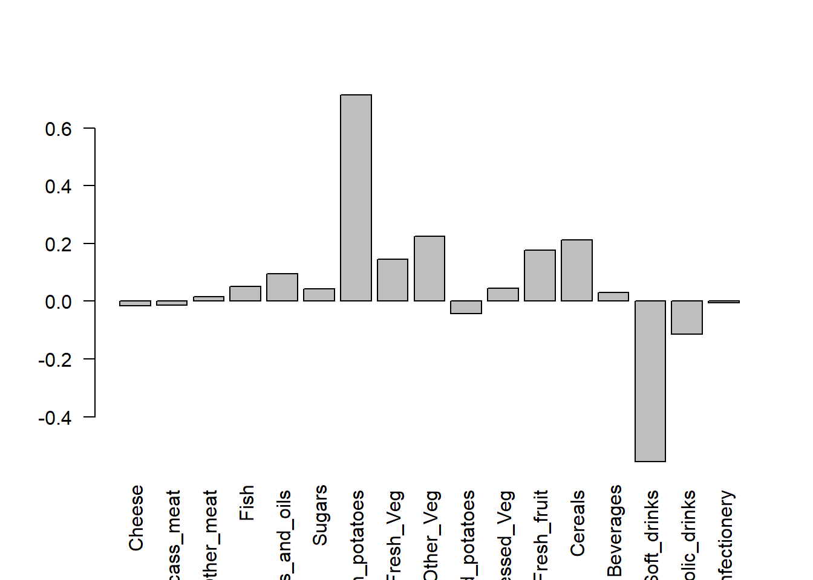

url <- "https://tinyurl.com/UK-foods"
x <- read.csv(url)lab07
Q1. How many rows and columns are in your new data frame named x? What R functions could you use to answer this questions?
dim(x)[1] 17 5Q1A. 17 rows and 4 columns
Q2. Which approach to solving the ‘row-names problem’ mentioned above do you prefer and why? Is one approach more robust than another under certain circumstances?
x <- read.csv(url, row.names=1)Q2A. I prefer the approach in which the row-names are assigned when the data is assigned to x. This is because carrying out the x <- function multiple times will remove columns from the data that we want to keep.
barplot(as.matrix(x), beside=T, col=rainbow(nrow(x)))
Q3: Changing what optional argument in the above barplot() function results in the following plot?
Q3A. Removing the “beside=T” argument causes the bars to stack on each other.
barplot(as.matrix(x), col=rainbow(nrow(x)))
Q5: Generating all pairwise plots may help somewhat. Can you make sense of the following code and resulting figure? What does it mean if a given point lies on the diagonal for a given plot?
pairs(x, col=rainbow(10), pch=16)
Q5A. The code says to create a pairwise plot for the data frame “x” with the color being rainbow palette 10 and point shape 16, which is a filled circle. If a given point lies on the diagonal for a given plot, then that means that that food type is positively correlated for the two countries.
Q6. What is the main differences between N. Ireland and the other countries of the UK in terms of this data-set?
The main differences between Northern Ireland and the other countries of the UK in terms of this data set is that the correlation of their data points are skewed more towards the left, which indicates that Northern Ireland has a lower consumption on average of all the food types.
Q7. Complete the code below to generate a plot of PC1 vs PC2. The second line adds text labels over the data points.
pca <- prcomp(t(x))
summary(pca)Importance of components:
PC1 PC2 PC3 PC4
Standard deviation 324.1502 212.7478 73.87622 4.189e-14
Proportion of Variance 0.6744 0.2905 0.03503 0.000e+00
Cumulative Proportion 0.6744 0.9650 1.00000 1.000e+00plot(pca$x[,1], pca$x[,2], xlab="PC1", ylab="PC2", xlim=c(-270,500))
text(pca$x[,1], pca$x[,2], colnames(x))
Q8. Customize your plot so that the colors of the country names match the colors in our UK and Ireland map and table at start of this document.
country_cols <- c("orange", "red", "blue", "green")
plot(pca$x[,1], pca$x[,2], xlab="PC1", ylab="PC2", xlim=c(-270,500))
text(pca$x[,1], pca$x[,2], colnames(x), col = country_cols)
Q9: Generate a similar ‘loadings plot’ for PC2. What two food groups feature prominently and what does PC2 mainly tell us about?
barplot( pca$rotation[,2], las=2 )
par(mar=c(10, 3, 0.35, 0))Q9A. Fresh potatoes and soft drinks are featured prominently in the plot for PC2. PC2 tells us that the food groups with the high positive scores, like fresh potatoes, are responsible for “pushing” Wales to the top of the plot. Additionally, soft drinks, which have a negative high negative score, are responsible for “pushing” Scotland to the bottom of the plot.
url2 <- "https://tinyurl.com/expression-CSV"
rna.data <- read.csv(url2, row.names=1)
head(rna.data) wt1 wt2 wt3 wt4 wt5 ko1 ko2 ko3 ko4 ko5
gene1 439 458 408 429 420 90 88 86 90 93
gene2 219 200 204 210 187 427 423 434 433 426
gene3 1006 989 1030 1017 973 252 237 238 226 210
gene4 783 792 829 856 760 849 856 835 885 894
gene5 181 249 204 244 225 277 305 272 270 279
gene6 460 502 491 491 493 612 594 577 618 638Q10: How many genes and samples are in this data set?
dim(rna.data)[1] 100 10There are 100 genes and 10 samples of each gene in this data set.